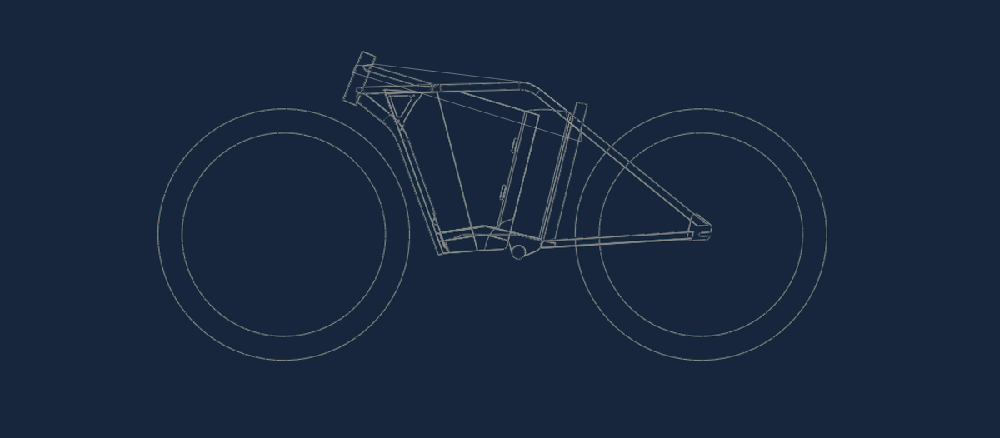

NEOWISE CYBERSPEEDER ebike PROJECT
We started the Cyberspeeder project in 2020 with the aim of taking the e-bike concept to the next level. From the beginning we have had some major objectives: integrating a luggage compartment in the middle of the frame, compatibility with as many aftermarket E-bike kits as possible and a silhouette that brings together all E-bike parts in a futuristic shape that pays tribute to a timeless design. Surprise! We did not stop there, we also integrated concepts such as build versatility, comfort, durability, ecology and decentralization in an E-bike concept worth of a new, responsible planet.
